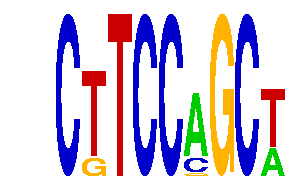

family_19 |
|---|
|  |
| Download PWM |
| Download instances (motifs) |
| Show motif distribution |
Query_ID | Query_Consensus | Subject_Name | Source_DB | Subject_ID | Length | Orientation | Offset | Divergence | Overlap | Subject_Consensus |
|---|---|---|---|---|---|---|---|---|---|---|
| family_19 | CTTCCAGCT | EWSR1-FLI1 | JASPAR | MA0149.1 | 18 | reverse-complement | -13 | 0.500 | 5 | GGAAGGAAGGAAGGAAGG |
| family_19 | CTTCCAGCT | GCGNNANTTCC | JASPAR | PF0048 | 11 | as given | -6 | 0.819 | 5 | GCGNCACTTCC |
Sequence | Start_position (from start) | Start_position (from end) | Average conservation | Best conservation score | Instance_with_best_CS | Best_Z-score | Instance_with_best_ZS | Strand |
|---|---|---|---|---|---|---|---|---|
| chr5:31208244-31209244 | 491 | 500 | 0.00288889 | 0.008 | CTTCCMGCW | 16.843723 | CKTCCMGCT | 1 |
| chr7:4460996-4461996 | 765 | 774 | 0.0972222 | 0.4 | CTTCCMGCW | 13.893304 | CKTCCAGCW | 1 |
| chr5:33576744-33577744 | 768 | 777 | 0.310111 | 0.336 | CTTCCMGCW | 16.843723 | CKTCCMGCT | 1 |
| chr9:78327014-78328014 | 498 | 507 | 0.999889 | 1 | CTTCCMGCW | 13.893304 | CKTCCAGCW | 1 |
| chr16:11251908-11252908 | 53 | 62 | 0.0278889 | 0.039 | CKTCCAGCW | 13.893304 | CTTCCMGCW | 1 |
| chr7:51734691-51735691 | 503 | 512 | 0.00344444 | 0.01 | CKTCCMGCT | 16.843723 | CKTCCRGCT | 1 |
| chr7:4470526-4471526 | 768 | 777 | 0.00366667 | 0.014 | CKTCCRGCT | 13.893304 | CTTCCMGCW | 1 |
| chr4:128970573-128971573 | 377 | 386 | 1 | 1 | CTTCCMGCW | 16.843723 | CKTCCMGCT | -1 |
| chr3:10207108-10208904 | 1220 | 1229 | 0.0115556 | 0.024 | CTTCCMGCW | 13.893304 | CTTCCMGCW | -1 |
| chr4:129472154-129473154 | 336 | 345 | 0.246444 | 0.381 | CKTCCMGCT | 13.893304 | CTTCCMGCW | -1 |
| chr11:114059629-114060629 | 240 | 249 | 0.974444 | 1 | CTTCCMGCW | 16.843723 | CKTCCMGCT | 1 |
| chr4:134842576-134843576 | 363 | 372 | 0.00366667 | 0.009 | CTTCCMGCW | 13.893304 | CTTCCMGCW | 1 |
| chr8:126417523-126418523 | 230 | 239 | 0 | 0 | CKTCCMGCT | 13.893304 | CTTCCMGCW | 1 |
| chr18:61123056-61124056 | 140 | 149 | 0.0291111 | 0.064 | CKTCCAGCW | 13.893304 | CTTCCMGCW | 1 |
| chr11:5797717-5798717 | 190 | 199 | 0.913 | 1 | CKTCCRGCT | 16.843723 | CKTCCMGCT | 1 |
| chr15:36538708-36539708 | 238 | 247 | 0.0218889 | 0.172 | CKTCCMGCT | 13.893304 | CTTCCMGCW | 1 |
| chr16:90202389-90203389 | 21 | 30 | 0.141333 | 0.182 | CTTCCMGCW | 13.893304 | CKTCCAGCW | 1 |
| chr2:35115003-35116003 | 351 | 360 | 0.183778 | 0.366 | CTTCCMGCW | 16.843723 | CKTCCRGCT | 1 |
| chr11:120101153-120102153 | 577 | 586 | 0.0184444 | 0.058 | CKTCCRGCT | 16.843723 | CKTCCRGCT | 1 |
| chr17:48571335-48572335 | 350 | 359 | 0.000666667 | 0.002 | CKTCCAGCW | 13.893304 | CKTCCAGCW | -1 |